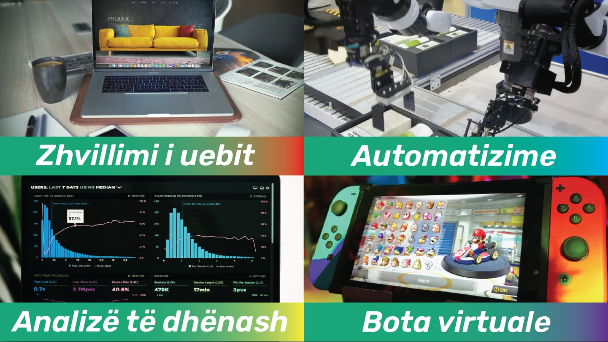

Sot ka shumë gjuhë programimi të disponueshme, dhe shumë programuesa të rinj bëjnë pyetjen “Pse duhet të përdoret pikërisht Python???”.
Faktorët kryesorë që përmendin programuesit e Python janë këto:
- Thjeshtësia dhe lehtësia e përdorimit: Sintaksa e saj e thjeshtë e bën shumë të lehtë për fillestarët të kuptojnë dhe të përdorin gjuhën.
- Madhësia e kodit: Një software i shkruajtur në Python është shumë herë më i shkurtër se i njëjti software i shkruajtur në Java, C#, etj. Jo vetëm që kemi më pak kod për të shkruajtur, por gjithashtu kemi edhe më pak kod për të mirëmbajtur, pasi ta kemi përfunduar.
- Lehtësia e kodit: Uniformiteti që kodi Python ka, e bën atë shumë të lehtë për t’u kuptuar, edhe nëse nuk është kodi që ke shkruajtur vetë.
- Komuniteti dhe mbështetja: Python ka një komunitet të fuqishëm dhe shumë burime për të mësuar dhe kërkuar ndihmë.
- Biblotekat e Python: Flask, NumPy, Django, Pandas janë të gjitha bibloteka që mund të zgjerohen në Python që të ju mundësojnë të krijoni/zhvilloni aplikacione të fuqishëm dhe të shpejtë. Përvec tyre Python ka edhe biblotekën e saj standarde, që përmban funksionalitete të predefinuara që mund të përdoren.
- Portabiliteti i programeve Python: Kodet në Python funksionojne njëlloj në të gjitha sistemet operative. Mjafton që ta kopjojmë kodin nga sistemi Windows dhe ta kalojmë atë në një sistem Linux dhe çdo gjë do funksionoj njëlloj.
- Komunikimi i Python me komponente të jashtëm: Python mund të integrohet me komponentë Java dhe .NET, mund të thërrasë bibloteka të C++, mund të lidhet me pajisje përmes porteve seriale. Nuk është një mjet i pavarur.
Çfarë mund të bëni me Python?
Python është një gjuhë programimi shumë e fuqishme dhe e përshtatshme për aplikacione të ndryshme.
Ja disa prej mundësive që ofron:
- Zhvillimi i Web-it: Mund të krijoni faqe dhe aplikacione web me korniza si Django dhe Flask.
- Automatizim: Shkruani skripte për të automatizuar detyra të përditshme, si menaxhimi i skedarëve dhe dërgimi i email-eve automatike.
- Analizë të të Dhënave: Python është ideal për analizën dhe vizualizimin e të dhënave, me biblioteka si Pandas, NumPy dhe Matplotlib.
- Mësim i Makinerisë (Machine Learning): Krijoni modele për mësimin e makinerisë dhe inteligjencën artificiale me Scikit-learn, TensorFlow dhe Keras.
- Zhvillim Aplikacionesh Desktop: Mund të krijoni aplikacione desktop me biblioteka si Tkinter, PyQt, ose Kivy.
- Përpunim i Imazheve dhe Videove: Realizoni manipulimin e imazheve dhe videove me anë të OpenCV, Pillow dhe MoviePy.
- Punë me API: Python mund të lidhet me API të ndryshme për të marrë dhe dërguar të dhëna, si në social media dhe financa.
- Krijimi i Botëve Virtuale: Mund të përdorni Python për të krijuar lojëra dhe botë virtuale me Pygame.
- Testimi i Softuerit: Mund të krijoni skripte për të testuar aplikacione dhe për të verifikuar funksionalitetin dhe stabilitetin e tyre.

Mundësi Punësimi si Zhvillues Python
- Full Stack Developer: Profesioni konsiston në krijimin e aplikacioneve web që përfshijnë backend dhe frontend.
- Data Scientist: Këtu Python përdoret për të analizuar dhe vizualizuar të dhënat, si dhe për të krijuar modele për mësimin e makinerisë dhe inteligjencën artificiale.
- Software Engineer: Profesioni konsiston në krijimin e aplikacioneve desktop dhe mobile me Python për logjikën dhe funksionalitetin.
- DevOps Engineer: Në këtë profesion realizohet automatizimi i proceseve të zhvillimit dhe menaxhimi i infrastrukturës në mjedise zhvillimi dhe prodhimi.
- Machine Learning Engineer: Këtu zhvillohen algoritme dhe modele të mësimit të makinerisë për zgjidhje teknologjike të avancuara.
Kërkesa e Tregut për Zhvillues Python
Python ka një kërkesë të lartë në treg, dhe mund të punoni si zhvillues i pavarur (freelancer) ose si pjesë e një ekipi. Shumë kompani e përdorin Python për zhvillimin e aplikacioneve web, analizën e të dhënave dhe inteligjencën artificiale, duke ofruar mundësi të shumta pune.
Përveç punës në kompani teknologjike të njohura, mund të kontribuoni në projekte me burim të hapur ose të zhvilloni projekte për klientë të ndryshëm.
Paga dhe Perspektiva Profesionale
- Paga: Zhvilluesit Python shpesh kanë paga të larta,
që variojnë sipas përvojës dhe fushës.
Për shembull, një zhvillues i sapo diplomuar mund të fitojë 60,000 deri në 80,000 në vit në SHBA, ndërsa një profesionist me përvojë mund të fitojë shumë më tepër. - Rritja Profesionale: Python ofron mundësi të shumta për avancim. Mund të kaloni nga pozita zhvilluesi në menaxher projektesh, arkitekt softueri, ose mund të nisni një karrierë si konsulent i teknologjisë.
Aplikacione të Famshme që Përdorin Python
Python përdoret në shumë aplikacione dhe platforma të njohura. Ja disa prej tyre:
- YouTube: Platforma më e madhe në botë për ndarjen e videove përdor Python për funksionalitete si transmetimi i videove dhe shërbimet e backend-it.
- Spotify: Python përdoret për shërbimet e backend-it dhe mësimin makinerik për personalizimin e rekomandimeve të muzikës.
- Google: Python është një nga gjuhët kryesore që përdoret për kërkimin në web, testimin dhe analizën e të dhënave.
- Netflix: Python fuqizon komponentë kyç të motorit të rekomandimeve dhe sistemeve të dërgimit të përmbajtjes (CDN).
- Instagram: Aplikacioni e përdor thjeshtësinë e Python për të shkallëzuar dhe menaxhuar miliona përdorues.
Çfarë ka të Keqe në Python?
Si çdo gjuhë tjetër, edhe Python ka disa disavantazhe. Ja disa prej tyre:
- Shpejtësia (Performanca)
- Problemi: Python është një gjuhë e interpretueshme, që do të thotë se kodet ekzekutohen në mënyrë lineare dhe nuk përkthehen në kode makine direkt, siç ndodh me gjuhët si C ose C++. Kjo bën që Python të jetë më i ngadalshëm në krahasim me gjuhët e kompilueshme.
- Pse është problem: Kur punoni me aplikacione që kërkojnë performancë të lartë, si simulime komplekse ose përpunim të të dhënave në shkallë të madhe, Python mund të jetë më i ngadalshëm në krahasim me gjuhët e tjera si C, C++, ose Java.